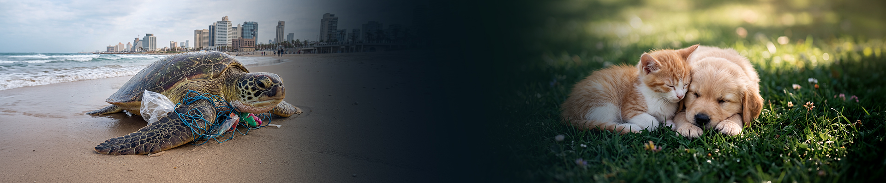

אותה רשת שמירה — הפעם ליער, לחוף, לחי ולסביבה. חיה פצועה, שריפה מתחילה, מפגע בשמורה: מישהו קרוב תמיד רואה ראשון.
הטבע לא מתקשר למוקד. אנחנו כן.
שלושה צעדים. בלי טפסים, בלי מוקד, בלי להמתין על הקו.
שתי אפליקציות. אותה רשת אנושית.
נעדכן אותך ברגע ש-SH✡MER Nature עולה לאוויר.